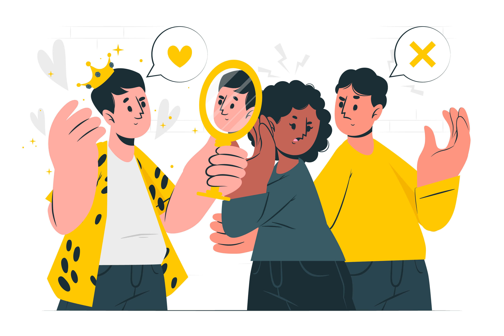

妄：狂妄、自大。
要说哪种性格的创业者造成的破坏，其爆发力最强，以我的经验，是那些不想知道天高地厚的妄人。
创业是一个循序渐进的过程，处在什么阶段就做什么阶段的事。每一个阶段都有所突破，一步一步地把团队做起来。
然而秉性狂妄的人，喜欢还没学会爬就要学会飞。比如，苹果的生产订单可以一次一百万部 iPhone，如果是一家尚不知名的硬件公司做的一款小众又小贵硬件产品，一次生产几万个，会不会很冒险呢？当然会，我就遇到过因为狂妄，不考虑市场容量也不考虑财务状况，只想着要迅速做大做强，生产订单迅速掏空公司现金储备、产品滞销多年，从而一蹶不振的公司。
同样的例子我经历过不止一次。可见，狂妄并不是一个很生僻的案例，尤其是在热钱好拿的时期，更是容易催生一些人内心的躁动。
狂妄的创业者嫌市场调研太保守、小步试错太磨叽，只想一做什么就直接登上榜首，喜欢聚光灯、渴望荣耀……实际上这些都是在给自己挖坑，在某一个临界时刻带领团队一头栽进去，再难起来。